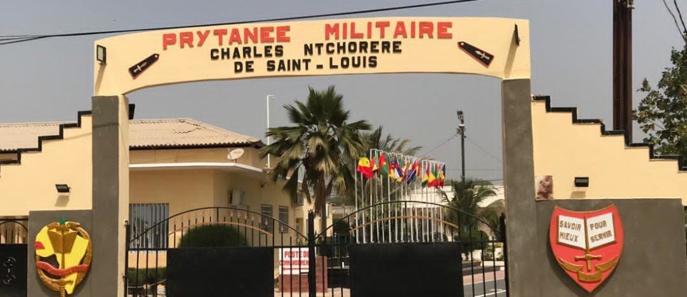

Not only born in Africa
But raized with children coming from almost all African countries


Yesterday and Today my memory goes to this school where I learned a lot about living in a community and it happened to me when I am getting more trouble seeing how our societies have been destroyed by this selfish gene that makes its expression more and more in action in human behavior. Living together, doing together no matter what are ones of the foundational background I got from this military school I leave because on year sooner because of my lack of discipline they said while I was a quite good student who a year before was the best student in scientific fields like math and physics. As proof of the communityness of this school, I got my year prize from the ambassador of Gabon a country far from mine geographically but which is so close culturally. I would not have this way of seeing without this school so I thought that like I did for some personalities that count for me, it was good to publicly honor all people that managed themselves to get this school working and provide all my support and prays for the team managing it now and hope that this year will be a very successful year in term of scholar results and pray that both young student soldiers, professors, and officers live in peace and breakthrough cooperation for the benefit of Africa and the world.
Knowledge deserves it really.
So thank all my brothers
PS: These officers are really good, I don't say it because one of them is my brotherhood but it happens just that it is true. They are good so may God help them succeed.